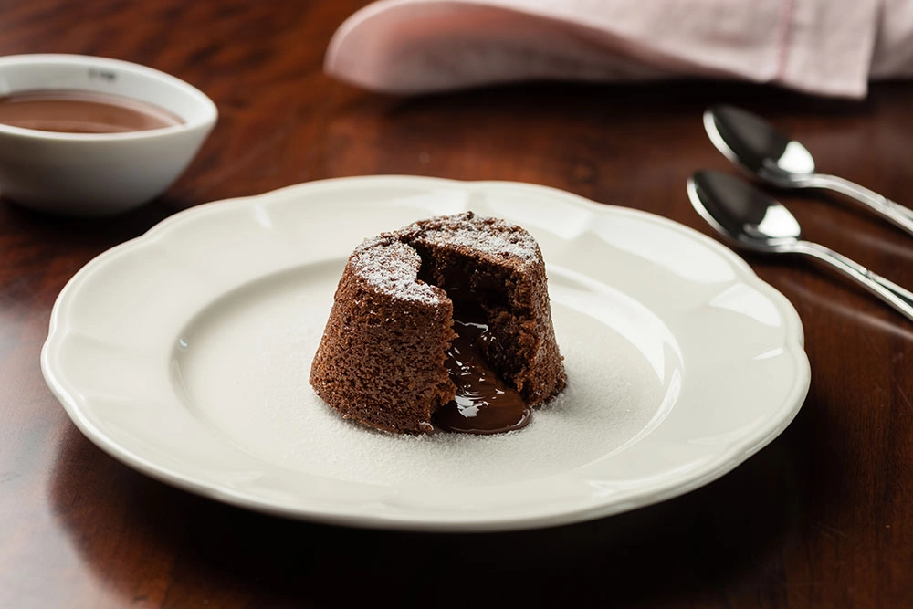

Minhas receitas

Petit Gâteau delicioso e sem açúcar
Ingredientes
150 gramas de margarina (use a versão light)
150 gramas de chocolate diet grosseiramente picado
1 colher de sopa de cacau em pó (5 g)
1/2 xícara de chá de farinha de trigo peneirada (120 g)
3 unidades de gema de ovo
3 unidades de Ovo
1/2 xícara de chá de adoçante em pó Zero-Cal Eritritol Bem Natural
Modo de preparo
Em banho-maria, derreta o chocolate com a margarina, mexendo até formar um creme liso.
Adicione o cacau e a farinha de trigo, misture bem até a massa ficar homogênea e reserve.
Na batedeira, bata as gemas, os ovos e o adoçante Zero-Cal Eritritol Bem Natural em velocidade média até obter um creme leve e aerado.
Adicione o copo da linhaccedila com a mistura e mexa até ficar homogêneo.
Incorpore este creme à mistura de chocolate reservada com cuidado para manter a textura aerada.
Unte e enfarinhe com cacau em pó dez formas específicas para Petit Gâteau (7,5 cm de diâmetro por 5 cm de altura).
Distribua a massa nas formas. Asse em forno pré-aquecido a 250º C por aproximadamente 9 minutos, ou até que a superfície pareça firme e cozida.
Desenforme o Petit Gâteau enquanto ainda estão quentes e sirva imediatamente, acompanhados de sorvete de sua escolha.
Rendimento: 10 unidades.